TechWorkshop L200: Creating Computer-Using Agents with Windows 365 for Agents
Please enter your own Microsoft alias (without the @microsoft.com) in the field below before starting the lab. This information is required to correctly associate your activity with your learner record and ensure your completion is accurately captured and reported. For data integrity and compliance reasons, learners may only enter their own alias. After completing the lab, please allow up to 5 business days for all reporting systems to fully reflect your completion.
Survey
In this workshop, you will create and then test computer-using agents.
This lab requires that you bring your own tenant. For any given type of tenant, you may need to perform additional configuration steps so that you can successfully deploy a cloud PC pool for the agent to use. Tenant types that can be used (with modifications) include:
- M365 Enterprise
- Copilot Individual Demo Tenant
- A custom tenant
Computer-use agents in Copilot Studio is a frontier technology. User interface objects, features, and functionality are all subject to change. What you see may not match the lab instructions.
You may not be able to complete all steps.
Exercise 00: Configure prerequisites
This exercise provides instructions for common configuration tasks. Before you attempt to create a cloud PC pool in Exercise 01, your tenant must meet the following requirements.
Depending on the tenant that you use, you may not need to complete all the tasks in this exercise. Take the time to review the steps in the exercise and complete the tasks as necessary.
Region: You must use United States-based regions for all Azure and Power Platform resources. More regions will be added as computer-use agents become generally available.
Azure subscription: You must have an Azure subscription for which you are the owner or contributor. You will use this subscription to configure pay-as-you-go for Copilot Studio.
Power Platform environment: You must create a managed Power Platform environment that is hosted in the United States region. The environment must be of type Production, must be managed, and must include Dataverse.
Power Platform billing plan: You must create a billing plan in Power Platform admin center to associate your Azure subscription with the Power Platform environment that you plan to use and to set up metering.
Tenant authoring permissions: You should configure tenant authoring permission. Without configuring this setting, pay-as-you-go can behave inconsistently. Agents may be created, but cloud PC pools may fail.
Estimated time to complete this exercise: 50 minutes
Learning resources
Task 01: Configure Azure
In this task, you will check the properties for your Azure subscription to ensure that your subscription is set up to properly support computer-use agents. You will also create a resource group to contain any Azure-based resources.
01: Check your Azure subscription properties
You will need an Azure subscription to bill against. In this task, you will check the configuration for the billing subscription.
Open an InPrivate browser session in Microsoft Edge and go to
https://portal.azure.com/. The Azure portal home page displays.Sign in by using the administrative credentials for your tenant.
On the Home page, select Subscriptions.
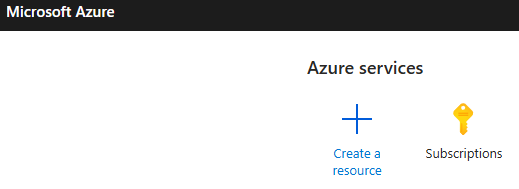
In the list of subscriptions, select your subscription.
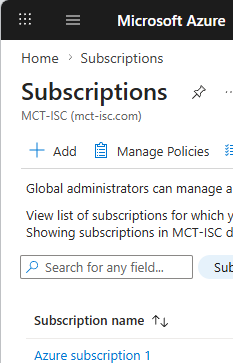
On the Overview page for the subscription, verify that the status shows Active and the role shows Owner or Contributor.
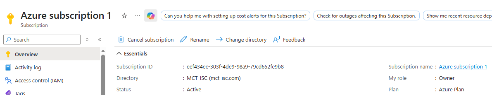
02: Create a resource group
In the navigation pane, select Resource groups.
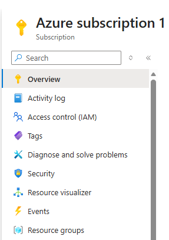
On the command bar, select + Create.

In the Resource group name field, enter
RGforCUAgentsResouces.In the Region field, select a region in the United States.
Select Review + create.


Select Create.

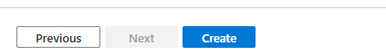
Task 02: Acquire a Power Platform environment
Computer-using agents must be created in a Power Platform environment that meets the following requirements:
- Environment type: Managed Production environment that includes Dataverse.
- Hosting region: At this time, the environment must be hosted in the United States region.
In this task, you will either create a new environment or reconfigure an existing environment.
There is documentation which suggests that Sandbox environments may cause issues with provisioning. For this reason, in this lab you will use a production environment.
Adding Dataverse to an environment consumes storage. Each tenant includes a finite amount of storage capacity. When you try to add Dataverse to an existing environment or create an environment that includes Dataverse, you may see the following error message.
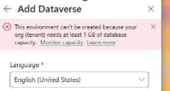
If you see the storage capacity error message, try configuring the default environment instead of creating a new environment.
01: Create a new Power Platform environment
Perform the steps in this section of Task 02 if you are creating a new Power Platform environment.
Skip these steps and complete the steps in Section 02: Convert the default environment to a managed environment and add Dataverse to configure an existing environment.
Open an InPrivate browser session in Microsoft Edge and go to
https://admin.powerplatform.microsoft.com/. The Power Platform admin center Home page displays.Sign in by using the administrative credentials for your tenant.
In the left pane, select Manage.
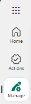
On the Environments page, on the command bar, select + New.

In the New environment pane, configure the fields by using the information in the following table:
Field Value Type Production Region United States. Name EnvironmentForCUAgents
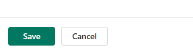
Go to the New environment pane and expand Change default settings.

Set the value for Make this a Managed Environment to Yes and then select Next.

On the Add Dataverse pane, in the Security group section, select + Select.
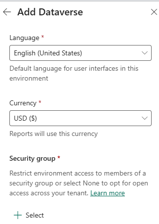
In the Open access section, select None. Then, select Done.
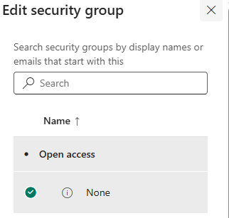
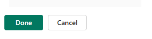
This option grants all users in the tenant access to the environment. For production work, you should set up restricted access to the environment.
On the Add Dataverse pane, select Save.


On the Environments page, note the value for the State column.
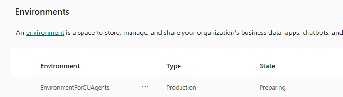
The value for the State column will change to Ready when provisioning is complete. On the command bar, select Refresh to update the state.

02: Convert the default environment to a managed environment and add Dataverse
In many cases you can use the default environment for your agents. The environment must be in the United States region. You cannot change the region for an environment after it is provisioned.
Perform the steps in this section of Task 02 if you plan to configure an existing Power Platform environment.
Skip these steps and complete the steps in Section 01: Create a new Power Platform environment to create a new environment.
Open an InPrivate browser session in Microsoft Edge and go to
https://admin.powerplatform.microsoft.com/. The Power Platform admin center Home page displays.Sign in by using the administrative credentials for your tenant.
In the left pane, select Manage.
Locate the environment where the type is Default. The default environment depicted in this screenshot is not managed but does include Dataverse.
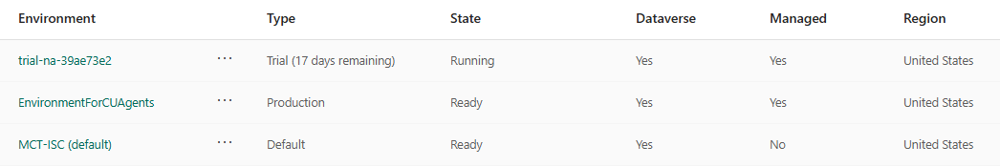
Select the environment. The environment details page displays.

To make this a managed environment, go to the Managed environments tile and select Enable Managed Environments.

In the Enable Managed Environment pane, select Enable.
In some versions of the user interface, this pane may contain an option to add Dataverse. If you see the option and your default environment does not yet include Dataverse, select the option and then select Enable to create the managed environment with Dataverse.

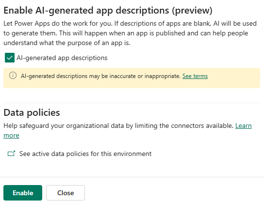
To add Dataverse, on the environment details page, in the Add Dataverse tile, select + Add Dataverse.
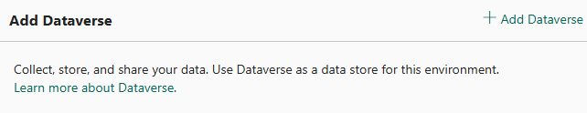
In the Add Dataverse pane, in the Security group section, select + Select.
In the Open access section, select None. Then, select Done.
Select Add.

Task 03: Set up pay-as-you-go billing
You must configure a pay-as-you-go billing plan in Power Platform admin center to successfully deploy a cloud PC pool for a computer-use agent. In this task, you will create the billing plan.
You must perform this task in Power Platform admin center. Creating billing for Microsoft 365 Copilot chat will fulfill the requirements.
Open an InPrivate browser session in Microsoft Edge and go to
https://admin.powerplatform.microsoft.com/. The Power Platform admin center Home page displays.Sign in by using the administrative credentials for your tenant.
In the left pane, expand Licensing.

In the Licensing pane, select Billing Plans.

On the Billing plans page, on the command bar, select + New billing plan.

In the New billing plan pane, select Azure subscription.
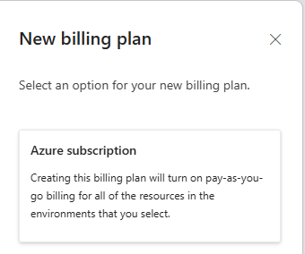
Configure the fields by using the information in the following table:
Field Value Name CUAgentsBillingPlanAzure subscription Select the Azure subscription that you would like to bill. Resource group RGforCUAgentsResouces 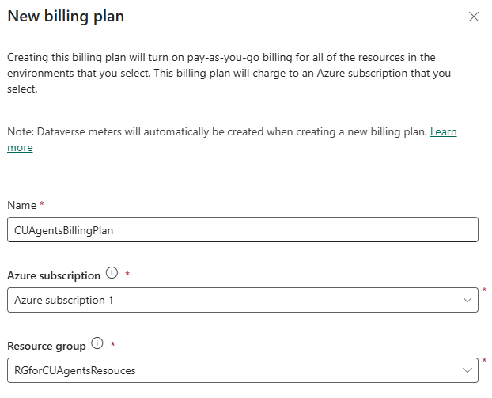
In the Meter field, select the following meters and then select Next.
- Dataverse
- Copilot Studio
- Windows 365 for Agents


In the Select environment pane, in the Region field, select United States.
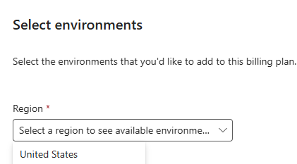
In the list of environments, select EnvironmentForCUAgents and then select Save.
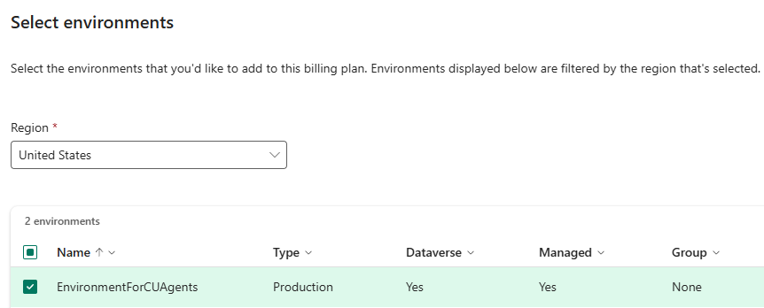

During testing, on multiple occasions we observed that the environment did not attach to the billing plan after saving. To check this, select the billing plan. Then, on the command bar, select Edit.
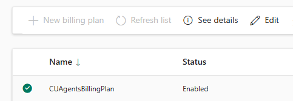
If you do not see the EnvironmentForCUAgents environment listed in the Target environments section, select Add or remove environments.
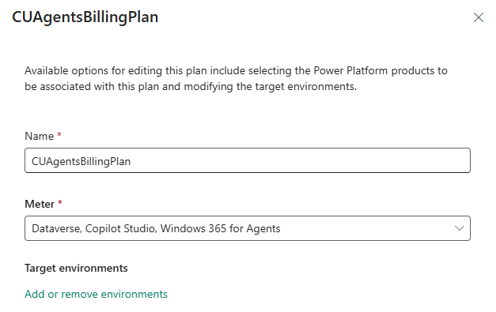
Select your environment again and then select Update environments.

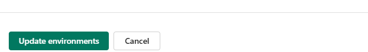
Finally, select Save.
Task 04: Ensure that users can author agent
You should configure authoring permissions. Without configuring these permissions, pay-as-you-go can behave inconsistently. Agents may create, but cloud PC pools may fail. You should ensure that a security group is selected and that the maker creating the cloud PC pool is a member.
In this task, you will confirm/configure agent authoring permissions.
01: Create a security group
In this section, you create a security group for all Copilot Studio authors (makers).
Open an InPrivate browser session in Microsoft Edge and go to
https://entra.microsoft.com/. The Microsoft Entra Home page displays.Sign in by using the administrative credentials for your tenant.
In the left pane, select Groups.

On the command bar, select New group.
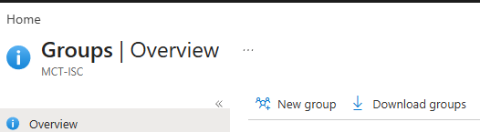
Configure the fields by using the information from the following table and then select Create.
Field Value Group type Security Group name CopilotStudio-AuthorsIn the Owners section, select No owners selected.

Select an account that has administrator permissions and then select Select.
On the New group page, select Create.
02: Ensure that users can author agents
In this section, you configure Power Platform admin center settings to ensure that members of the security group can author agents.
Existing publicly available documentation does not list configuring authoring permissions as a requirement, but other documentation suggests that doing so increases the likelihood of cloud PC pools provisioning correctly.
Open an InPrivate browser session in Microsoft Edge and go to
https://admin.powerplatform.microsoft.com/. The Power Platform admin center Home page displays.Sign in by using the administrative credentials for your tenant.
At the top of the page, select Settings (the Gear icon).

In the Settings pane, select Power Platform settings.
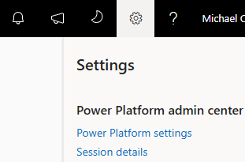
On the Tenant settings page, locate and select Copilot Studio authors.

In the Copilot Studio authors pane, ensure that the CopilotStudio-Authors security group is listed.
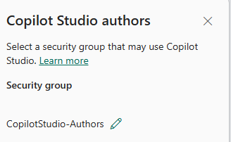
Task 04: Create a SharePoint site and upload an Excel workbook that represents orders
01: Create the site
Open an InPrivate browser session in Microsoft Edge and go to
https://www.microsoft.com/en-us/microsoft-365/sharepoint.Sign in by using your administrative credentials.
On the command bar, select Create site.
In the Select a template dialog, select Communication site.

In the Select a template dialog, select Standard communication.

Select Use template.

In the Site name field, enter the following text and then select Next.
Sales and MarketingYou may see a message stating that the site name is not unique and cannot be used. If you see this message, try adding numbers to the end of the name until the name is accepted.
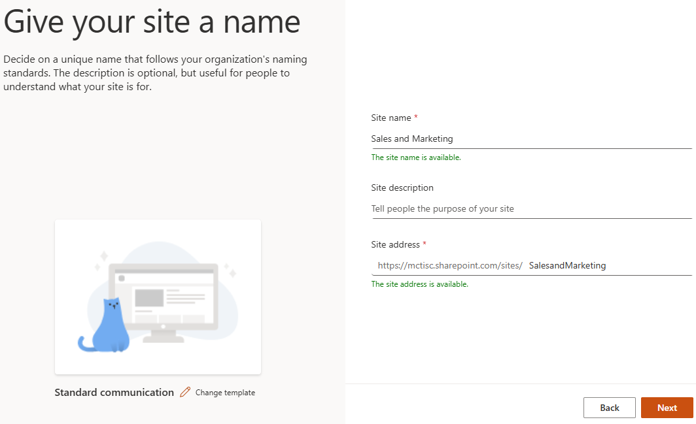
Select Create site.
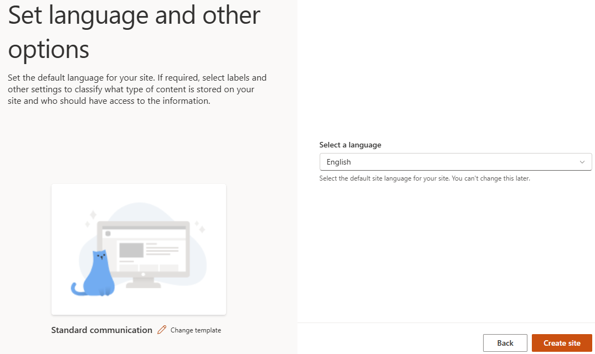
In the browser address bar, copy the URL for the site. The URL should resemble the following:
https://msce09878345.sharepoint.com/sites/SalesandMarketing/
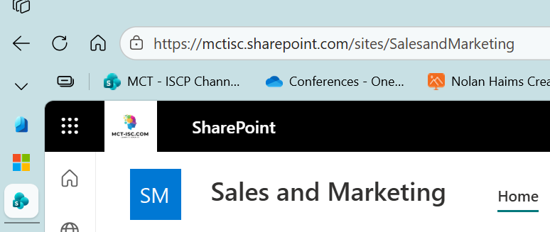
Paste the URL into the following text field. We will use this saved URL to prepare the instructions for the agent you create in Exercise 02.
Leave the SharePoint site open. You will return to the site to upload a Microsoft Excel workbook later in this task.
02: Download the Excel workbook from GitHub
We have placed the Excel workbook in a GitHub repository so that you can easily access the file. In this section, you will download the file so that you can add the file to the SharePoint document library.
Open a web browser and go to
https://github.com/skillable-custom-lab-development/40-505-26.In the list of files, select W365A Lab Product Orders.xlsx.

On the page for the W365A Lab Product Orders.xlsx file, on the command bar, select Download raw file.

Confirm that the file has downloaded to your Downloads folder.
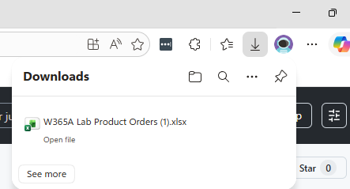
03: Upload the Excel file to SharePoint
In this section, you will upload the Excel workbook to the SharePoint document library.
On the SharePoint site page, on the command bar, select Documents.

On the command bar for the document library, select + Create or upload and then select Folder.
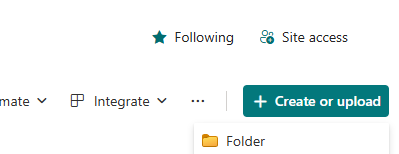
In the Create a folder dialog, in the Name field, enter
Salesand then select Create.
On the document library page, double-click Sales to open the folder.

On the command bar for the document library, select + Create or upload and then select Files Upload.

In the File Open dialog, go to the folder where you downloaded the file. Select the W365A Lab Product Orders.xlsx file and then select Open.

Check the SharePoint document library to ensure that the file is available.

Exercise 01: Create and test a computer-using agent by using a template
Copilot Studio provides a set of templates that allow you to easily create a computer-using agent. In this exercise, you will create an agent by using a template and then try out the agent to see it in action.
Copilot Studio you can create tools to add functionality to the agent. Tools are building blocks that let the agent interact with external systems and perform actions. In this exercise, you will add the Computer use tool to an agent by using a pre-defined tool template.
Estimated time to complete this exercise: 50 minutes (includes provisioning time)
In Exercise 00 you used administrative credentials to configure your environment. For this exercise, you will switch context. You will act as an agent maker (a user that is licensed to author agents in Copilot Studio but does not have administrative permissions).
Task 01: Create and configure the agent
01: Create the agent
Open an InPrivate browser session in Microsoft Edge and go to
https://www.copilotstudio.com/.On the command bar, select Sign in to Copilot Studio.
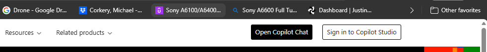
Sign in by using credentials for a user that has a Copilot license but does NOT have administrative privileges.
On the home page, select the Create computer-using agent tile.

In the Name your agent dialog, in the Name field, enter the following text and then select Create
Invoice Processing Agent
Your experience may differ from this step. In the previous version of the user interface, Copilot Studio automatically created a name for the agent. You can change the name on the Overview page for the agent.
Wait while the agent provisions.
Before the agent provisioning process completes, the system displays the New computer use dialog. The agent page displays behind the New computer use tool dialog. A banner stating that This feature isn't available until your agent has finished setting up displays.
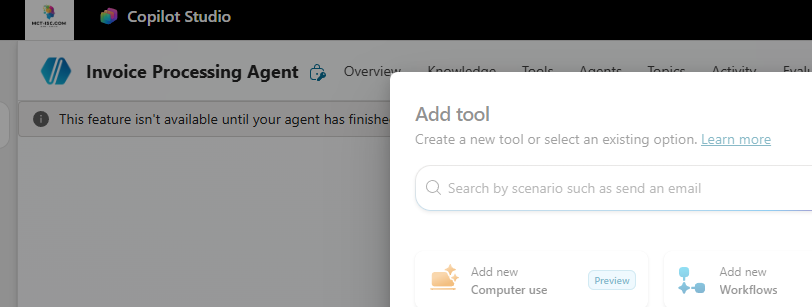
Do not proceed to the next step until the banner message changes to Your agent has been provisioned. The provisioning process generally completes within 1-2 minutes.

After you confirm that the agent is provisioned, in the New computer use dialog, select the tile for the Invoice processing prompt template.
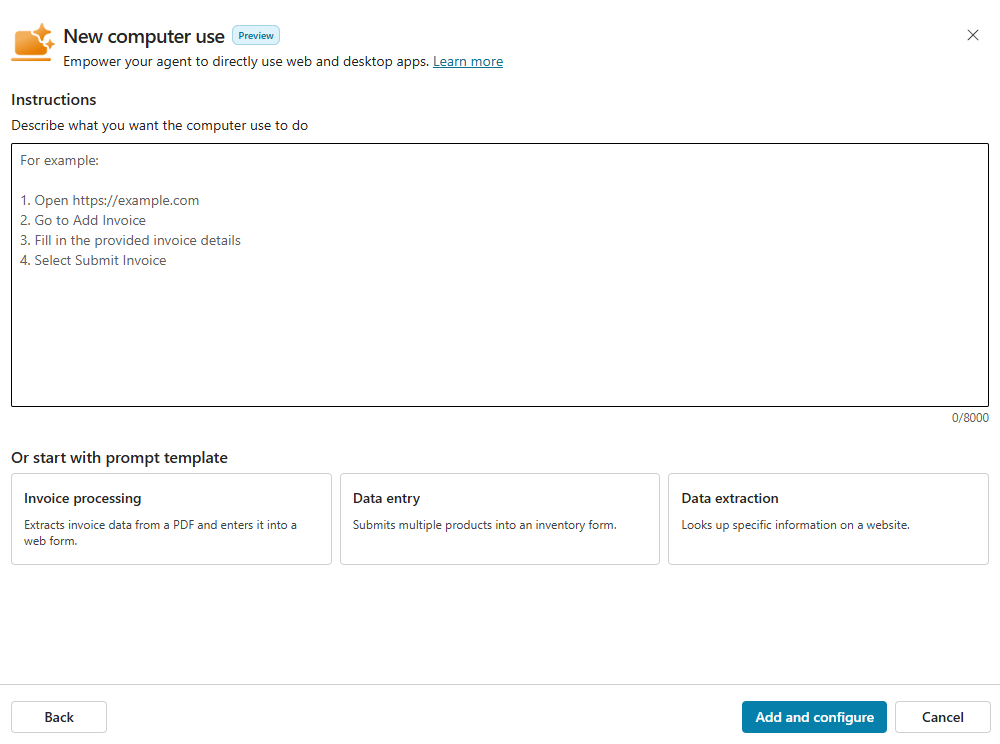
When you select a template, the text in the Instructions pane is updated for you. Copilot Studio will build an agent that interacts with the website specified in the instructions.
The website is publicly available and resembles an invoice management app that your customers may use in their organizations. The following screenshot shows some sample data from the website:
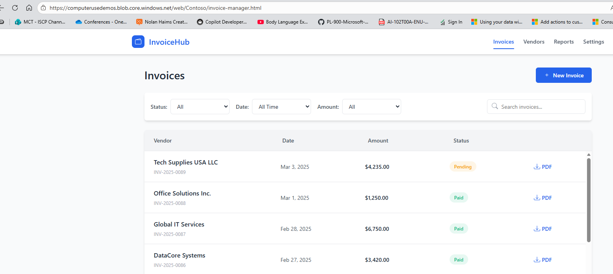
On the New computer use dialog, select Add and configure. Wait while Copilot Studio provisions the agent. This process typically takes less than two minutes.

02: Create a cloud PC pool for the agent
The process for creating a cloud PC pool is easy, but there are a lot of things that must go right for provisioning to succeed. Currently, there is no easy way to identify what is happening during provisioning and what may be going wrong.
If the cloud PC pool still shows as Provisioning after 45 minutes, refresh your browser and then check to see if the provisioning completed.
Move to the Machines section. This is where you specify where the agent will run.
In the Machines section, select ? Help me decide.

In the Understand where to run your computer use dialog, review the available options and then select Close.
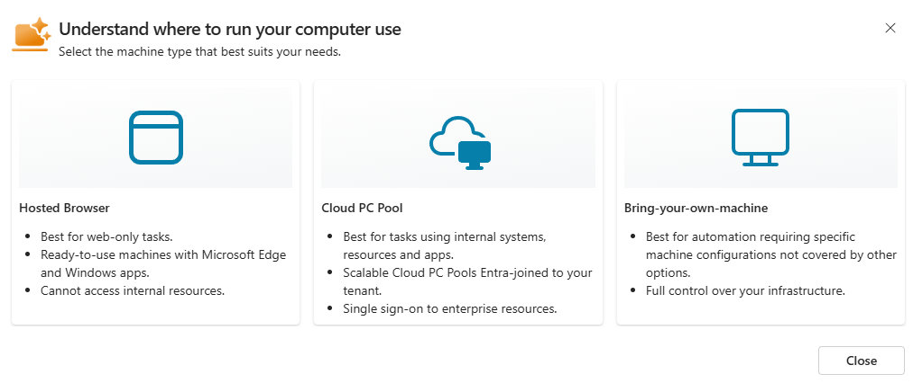
In the Machine field, select Cloud PC pool and then select + Add new.

On the Create a Cloud PC pool dialog, in the Name field, enter
CUAAgentPooland then select Create.
Move on to Part 03: Review other agent options while you wait for the cloud PC pool to provision.
It can take 20-30 minutes to provision the PC pool. The Windows Busy indicator (Wait cursor) displays next to the machine group name until the machine group is fully provisioned. The page will also display a page to let you know that the machine pool is provisioning.
The Busy indicator and the message may not be visible if you refresh the page. If you select Manage machines and then select your machine pool (which is called a machine group in Power Automate), you can find out whether the pool is still provisioning.

03: Review other agent options
While the machine pool provisions, let's look at some of the other options that you can configure.
Move to the Details section for the agent. The Claude Sonnet model is selected. This model works well for this.
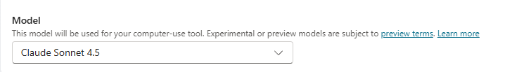
For customer work, feel free to try other models and see which works best for your specific needs.
The models that are available to you may change over time.
Go to the Inputs section. This is where you would specify any extra information that the agent needs to perform its duties (over and above what is already listed in the instructions).

Move to the Credentials section for the agent. Here, you can decide how to store the credentials that may be required to connect to a resource (for example, an app or a website). You can store credentials within the tool itself or in Azure Key Vault.
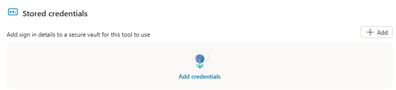
Move to the Allowed websites and desktop apps section for the agent. In this section, you can restrict access to specific resources by explicitly listing those resources.
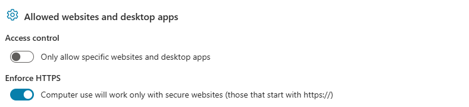
Enabling access control prevents the model from taking actions on websites or apps that you have not explicitly allowed.
Move to the Machines section.
In the Machines section, select Manage machines. Microsoft Power Automate Machines page opens in another tab in the web browser.

On the Power Automate page, on the command bar, select Machine groups.

In the list of machine groups, select CUAgentPool.

Review the details for the machine group.
You will not be able to see details for the machine group until it is fully provisioned. Do not proceed to Part 04: Create a connection until the cloud PC pool is provisioned.
04: Create a connection
Once the machine pool is provisioned, you can create a connection to the pool.
Do not complete the following steps unless the machine pool is already provisioned.
Return to the web page that displays the Invoice Processing tool for the agent.
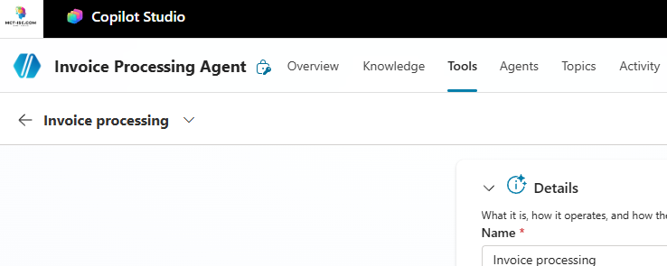
Go to the Machines section and then select + Create new connection.
In the Connect to Computer use dialog, in the Machine field, select CUAgentPool.

Enter credentials for a user that has a Copilot license but does NOT have administrative privileges. Then, select Create.

In the Credentials to use field, ensure that Maker-provided credentials is selected.
There is an option to use agent-provided credentials in development.

Select Save.
Remain on the Invoice processing tool page.
Task 02: Test the agent
01: Test the agent by using the Claude Sonnet model
When you created the agent, you configured the computer-use tool to use the Claude Sonnet model. In this section, you will test the agent as configure.
On the Invoice processing tool page, go to the Instructions section and then select Test.
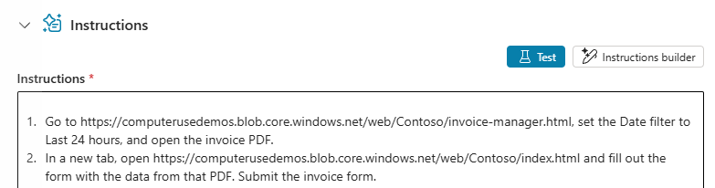
Wait while the system prepares to test the process.
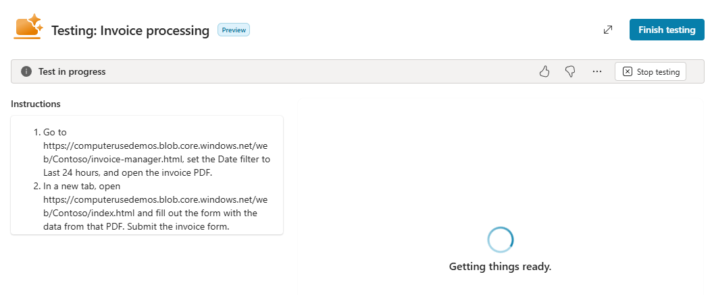
In the Testing: Invoice processing dialog, the Instructions and Activity panes display on the left. The test machine user interface appears on the right.
At the upper right of the dialog, select the double-sided arrow to maximize the screen. This will make it easier to view the operations in the test machine user interface.

Monitor the Activity pane and test machine user interface to follow the process. The process ends when the invoice is submitted successfully. The Claude Sonnet model produces verbose output. It tells you what it is thinking, what it plans to do, and provides detailed output for each action.
During lab development, the entire testing process (from the request for a computer to successful submission of the invoice took between 3-6 minutes.)
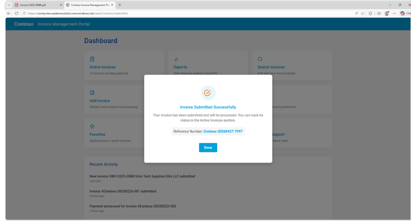
At the upper right of the Testing: Invoice processing dialog, select Finish Testing.
02: Test the agent by using an OpenAI model
In this section, you will reconfigure the tool to use an OpenAI model and then test the agent again. This allows you to compare and contrast behavior and performance.
On the Invoice processing tool page, go to the Details section.
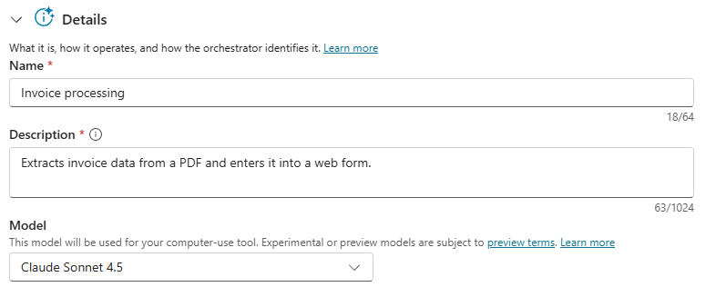
In the Model field, select Computer-Using Agent (CUA).
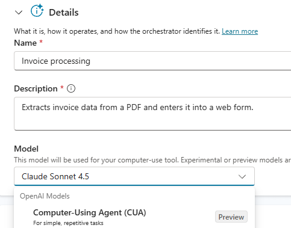
On the command bar, select Save.

Repeat the steps in Section one of this task to test the agent.
Review the text in the Activity pane. In contrast to the Claude Sonnet model, the OpenAI model produces less output. You will typically see summary statements but not a lot of details. It takes about the same amount of time for testing to complete by using either model.
Please refer to the instructions in Section 01: Test the agent by using the Claude Sonnet model for information on finding the Activity pane.
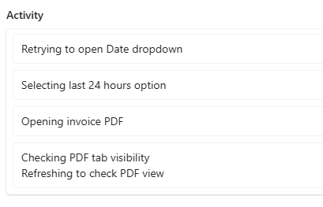
Task 03: Explore the machine pool by using Microsoft Intune
You can view information about the machine pools that you created because they are managed in Intune.
The user experience for viewing cloud PC pools in Intune is changing. These instructions reflect the recent experience. If you do not see the pools, try following the alternate path:
Home > Devices | Windows > Windows | Windows 365 > Devices
Open an InPrivate browser session in Microsoft Edge and go to
https://intune.microsoft.com/.If prompted, sign in by using your administrative credentials.
In the left pane, select Devices.

In the Devices pane, expand Manage Windows 365 Cloud PCs and then select All Cloud PCs.

In the list of machine pools, select a pool.
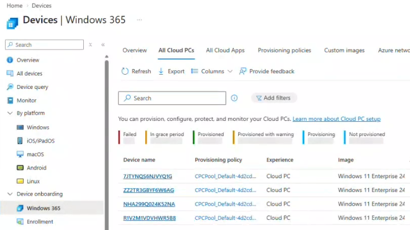
View the properties for the selected pool.
At this time, you can view the pools and information about each pool, but you cannot make changes. Soon, administrators will have more capabilities.

Exercise 02: Create and publish a computer-using agent
Copilot Studio provides a set of templates that allow you to easily create a computer-using agent. In this exercise, you will create a blank agent and then configure the agent. Then, you will try out the agent to see it in action.
For this exercise, you will act as an agent maker (a user that is licensed to author agents in Copilot Studio, but who does not have administrative permissions).
Estimated time to complete this exercise: 45 minutes
Task 01: Create and configure an agent
Open an InPrivate browser session in Microsoft Edge and go to
https://www.copilotstudio.com/.On the command bar, select Sign in to Copilot Studio.
Sign in by using credentials for a user that has a Copilot license but does NOT have administrative privileges.
In the left pane, select Agents.
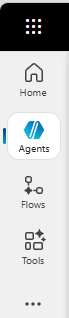
On the Agents page, on the command bar, select + Create blank agent.
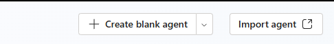
In the Name your agent dialog, in the Name field, enter the following text and then select Create
Order Processing Agent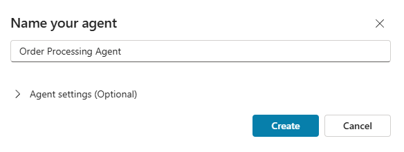
Your experience may differ from this step. In the previous version of the user interface, Copilot Studio automatically created a name for the agent. You can change the name on the Overview page for the agent.
Once the agent is provisioned, on the Details tile, select Edit.
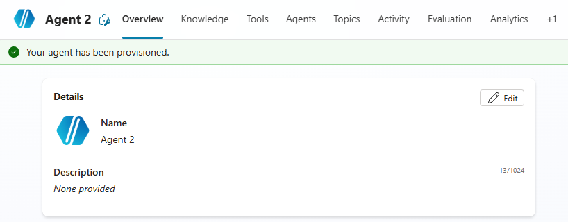
In the Description field, enter
Use a computer to navigate a website and process orders.At the upper right of the Details tile, select Save.
Move down the page to the Tools section and then select + Add tool.

In the Add tool dialog, select Add new Computer Use.
In the New computer use dialog, in the Instructions field, enter the following text:
Dismiss any popups or interruptions encountered during this task. To complete this task, open the Order Management Portal in a browser tab: https://automatemywebsite.blob.core.windows.net/web/OrderPortal/index.html Open the Sales and Marketing SharePoint site in a separate tab: <SPSiteURL> On the SharePoint site and locate the "W365 Lab Product Orders" Excel file in the Sales folder. Each unprocessed row represents a new customer order. For each row where OrderStatus is "New": Read the Customer Name, Product Name, Product SKU, and Quantity. Create a new order in the Order Management Portal using this information. Determine today's date by navigating to https://www.bing.com/search?q=today's+date and reading the date shown Set the delivery deadline to today's date and initial status to "Received". Submit the order. Filter the Orders view to show "Received" orders After submission: Capture the generated Order ID. Return to the opened spreadsheet Write the Order ID to the corresponding "OrderID" column Update the "OrderStatus" column to "Received" Repeat until all applicable rows are processed Return to the open Order Portal tab to view the main Dashboard page.Review the instructions to ensure that you understand the process that the agent will use.
Then, select Add and configure.

On the Order Processing Agent tool page, go to the Machines section.
Configure the tool to use the same machine pool that you used for Exercise 01.
In the Connection field, ensure that there is an active connection. Reconnect if necessary, and then select Save.
On the Order Processing Agent tool page, go to the Human supervision section.

Select an account where the system should send email messages when additional information or confirmation is needed.
On the command bar, select Save.

Task 02: Test the agent
The agent connects to an internal SharePoint site that requires authentication. You must monitor the activity window during testing so that you can complete multi-authentication (MFA) if prompted. Testing will be suspended when the system is waiting for MFA, and the process will time out if you do not complete MFA.
You may also receive an email notification to approve the test. The email is sent to the email address that you configured in Task 01. You must approve the request for the test to continue.
On the Order Processing Agent tool page, go to the Instructions section and then select Test.
During lab development, the entire testing process (from the request for a computer to successful submission of the invoice took between 15-20 minutes.)
Wait while the system prepares to test the process.
In the Testing: Invoice processing dialog, the Instructions and Activity panes display on the left. The test machine user interface appears on the right.
Monitor the Activity pane. The following screenshot shows that the agent successfully opened the Orders site and the SharePoint site.

The following screenshot shows that the agent successfully entered an order.

Here, you can see that the agent is updating the Excel workbook to show the new status for the order.
At the upper right of the Testing: Invoice processing dialog, select Finish Testing.
The following screenshot shows that the agent is waiting for you to complete MFA. Check your Authenticator app and approve the request.
You may experience issues with MFA. If you can't finish this task because you are blocked please continue on.
Task 03: Publish the agent and add a channel
To make the agent available to others, you must first publish the agent. You can publish the agent to Teams and Microsoft 365. In this task, you will publish to the Microsoft 365 page.
Publishing agents from trial accounts is no longer permitted. The user must have a valid Copilot license.
On the command bar, select Publish.

In the confirmation dialog, select Publish. Wait for the publishing process to complete.
On the command bar, select Channels.

In the list of tiles that display, select Microsoft 365 and Microsoft Teams.

In the Microsoft 365 and Microsoft Teams pane, select Add channel.


In the Microsoft 365 and Microsoft Teams pane, select Availability options.
In the Show in the store section, select Show to everyone in my org.
This action sends an approval request to an administrator. Before the agent becomes visible to everyone, the administrator must approve the request. You will approve the request in the next exercise.
In the Show in Teams store for org pane, select Submit to org catalog.
In the confirmation dialog, select Yes.

Exercise 03: Access the agent as an end user
For this exercise, you will first act as an administrator to approve the request to make the agent visible to all users. Then, you will act as a user to try out the agent.
Estimated time to complete this exercise: 10-15 minutes
Task 01: Approve the agent distribution request
Open a browser tab and go to
https://admin.cloud.microsoft/?source=applauncher#/homepage. This opens the Microsoft 365 admin center.Sign in with your administrative credentials.
In the left pane, select Agents and then select All agents.
In the list of agents, locate and select Order Processing Agent.
Next to the agent name, select the vertical ellipses (…) and then select Publish to store.
Your agent may already show as Available. If so, you can skip this step and go back to Copilot Studio to publish the agent.

In the Publish agent to selected users pane, in the Select users or groups who can install the agent, select All users.
In the Publish agent to selected users pane, in the Select users or groups who will have the agent pre-installed (optional) field, select All users and then select Next.
In the Apply template pane, select Next.
In a customer or production environment, you should configure policies to protect people, systems, and data.
In the Review permissions pane, select Next.

In the Review and finish pane, select Publish.


Wait for the publishing process to be completed and then select Done.

On the All agents page, on the command bar, select Registry. Confirm that Order Processing Agent shows as Available.
After you complete this process, the agent will not be immediately available. The agent is deployed as a batch process.
Task 02: Try out the agent as an end user
In this task, you will sign in to Teams as an end user.
Open an InPrivate browser session in Microsoft Edge and go to
https://copilotstudio.microsoft.com/.On the command bar, select Sign in to Copilot Studio.
Sign in by using credentials for an end user.
On the command bar, select Channels.
In the list of tiles that display, select Microsoft 365 and Microsoft Teams.
In the Microsoft 365 and Microsoft Teams pane, in the Agent preview section, select See agent in Teams.

Wait for the Teams web app to open.
In the left pane, select Apps.
In the Apps pane, in the Apps section, select Built for your org.
After an administrator approves the request to make the agent available for an organization, it can take some time for the agent to display. If you do not see the agent, wait 10-15 minutes and try again.
On the Built for your org page, in the Order Processing Agent tile, select Add.
In the confirmation dialog, select Add.

In the Order Processing Agent dialog, select Open.

Submit the following prompt:
Please process the orders from W365A Lab Product Orders.xlsx. Please provide updates about the process and let me know if there are any issues.
Wait while the agent processes the orders.
Remember that the agent runs in the context of the identity that created the agent. If prompted to authenticate with MFA, you must use that identity to authenticate.
If there is a failure, retest the agent.
IMPORTANT: These labs are hosted on the Skillable platform. Completion data is collected and then exported to Success Factors every Monday. SF require another 1-3 days to process that data. The status for this lab will be visible in Viva and Learning Path next week.
Be sure to select "Submit" in the bottom right corner to get credit for completing this lab.
After answering the survey questions, select submit to complete and end the lab. This is required in order to receive credit for lab completion.